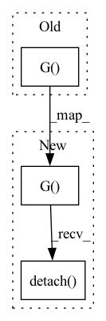

Pattern ID :3065

Before Change
source_encode = self.wgan.get_encode_value(source_imgs)
target_encode = self.wgan.get_encode_value(target_imgs)
interpolation_encode = source_encode * self.tau + target_encode * (1 - self.tau)
poison_imgs = self.wgan.G(interpolation_encode)
poison_imgs = self.add_mark(poison_imgs)
elif self.poison_generation_method == "pgd":
poison_imgs, _ = self.pgd.craft_example(_input=source_imgs)
poison_imgs = self.add_mark(poison_imgs)
After Change
source_encode = self.wgan.get_encode_value(source_imgs, self.poison_num).detach()
target_encode = self.wgan.get_encode_value(target_imgs, self.poison_num).detach()
interpolation_encode = source_encode * self.tau + target_encode * (1 - self.tau)
poison_imgs = self.wgan.G(interpolation_encode).detach()
poison_imgs = self.add_mark(poison_imgs)
elif self.poison_generation_method == "pgd":
poison_imgs, _ = self.pgd.craft_example(_input=source_imgs)
poison_imgs = self.add_mark(poison_imgs)
In pattern: SUPERPATTERN
Frequency: 4
Non-data size: 3
Instances
Fragment ID: 11875653
Project Name: ain-soph/trojanzoo
Commit Name: 58a03f3ecb5a79f97b41b5a14b4bdb5d16596bdf
Time: 2020-08-06
Author: ain-soph@live.com
File Name: trojanzoo/attack/backdoor/clean_label.py
M Class Name: Clean_Label
N Class Name: Clean_Label
M Method Name: attack(3)
N Method Name: attack(3)
M Parent Class: BadNet
N Parent Class: BadNet
M File Name: trojanzoo/attack/backdoor/clean_label.py
N File Name: trojanzoo/attack/backdoor/clean_label.py
M Start Line: 102
M End Line: 105
N Start Line: 102
N End Line: 105
'>
Before Change
info = {
"real_images": self.reshape_images(images),
"generated_images": self.reshape_images(self.G(z))
}
self.logger.log_images(info, generator_iter)
After Change
self.logger.log_losses(info, generator_iter)
with torch.no_grad():
fake_images = self.G(z)[:self.number_of_images]
real_images = images[:self.number_of_images]
// discriminate real images and fake images
fake_labels = self.D(fake_images).flatten()
real_labels = self.D(images).flatten()
info = {
"real_images": real_images.cpu().detach().numpy(),
"fake_images": fake_images.cpu().detach().numpy(),
"real_labels": real_labels.cpu().detach().numpy(),
"fake_labels": fake_labels.cpu().detach().numpy()
}
self.logger.log_images(info, epoch)
'>
Fragment ID: 11875655
Project Name: luzhixing12345/anime-wgan
Commit Name: 0a8816f8a7e456f3393ccf2f0468adecf03b24b3
Time: 2022-05-09
Author: luzhixing12345@163.com
File Name: model/GAN.py
M Class Name: GAN
N Class Name: GAN
M Method Name: train(2)
N Method Name: train(2)
M Parent Class: BasicGAN
N Parent Class: BasicGAN
M File Name: model/GAN.py
N File Name: model/GAN.py
M Start Line: 42
M End Line: 128
N Start Line: 113
N End Line: 199
'>
Before Change
w_space = latent_to_w(self.GAN.S, style)
w_styles = styles_def_to_tensor(w_space)
generated_images = self.GAN.G(w_styles, noise)
fake_output = self.GAN.D(generated_images.clone().detach())
image_batch = next(self.loader).cuda()
image_batch.requires_grad_()
After Change
w_space = latent_to_w(self.GAN.S, style)
w_styles = styles_def_to_tensor(w_space)
generated_images = self.GAN.G(w_styles, noise).detach()
fake_output = self.GAN.D(generated_images)
image_batch = next(self.loader).cuda()
image_batch.requires_grad_()
'>
Fragment ID: 11875651
Project Name: lucidrains/stylegan2-pytorch
Commit Name: c7e7c51aeb66ff94e8d7eafb4af44d26ea4a08b0
Time: 2020-01-30
Author: lucidrains@gmail.com
File Name: stylegan2_pytorch/stylegan2_pytorch.py
M Class Name: Trainer
N Class Name: Trainer
M Method Name: train(1)
N Method Name: train(1)
M Parent Class:
N Parent Class:
M File Name: stylegan2_pytorch/stylegan2_pytorch.py
N File Name: stylegan2_pytorch/stylegan2_pytorch.py
M Start Line: 425
M End Line: 442
N Start Line: 434
N End Line: 451
'>
Before Change
info = {
"real_images": self.reshape_images(images),
"generated_images": self.reshape_images(self.G(z))
}
self.logger.log_images(info, generator_iter)
After Change
self.logger.log_losses(info, generator_iter)
with torch.no_grad():
fake_images = self.G(z)[:self.number_of_images]
real_images = images[:self.number_of_images]
// discriminate real images and fake images
fake_labels = self.D(fake_images).flatten()
real_labels = self.D(images).flatten()
info = {
"real_images": real_images.cpu().detach().numpy(),
"fake_images": fake_images.cpu().detach().numpy(),
"real_labels": real_labels.cpu().detach().numpy(),
"fake_labels": fake_labels.cpu().detach().numpy()
}
self.logger.log_images(info, epoch)
'>
Fragment ID: 11875657
Project Name: luzhixing12345/anime-wgan
Commit Name: 78bfc686a9a57dc4f0267d8616bea1757e91921a
Time: 2022-05-08
Author: luzhixing12345@163.com
File Name: model/DCGAN.py
M Class Name: DCGAN
N Class Name: DCGAN
M Method Name: train(2)
N Method Name: train(2)
M Parent Class: BasicModel
N Parent Class: BasicModel
M File Name: model/DCGAN.py
N File Name: model/DCGAN.py
M Start Line: 114
M End Line: 193
N Start Line: 116
N End Line: 193